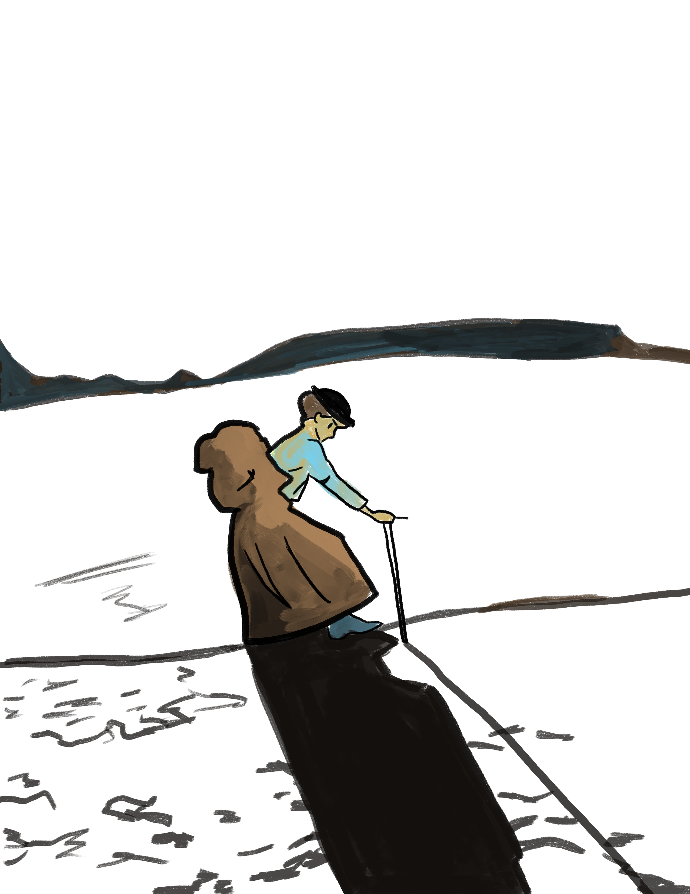
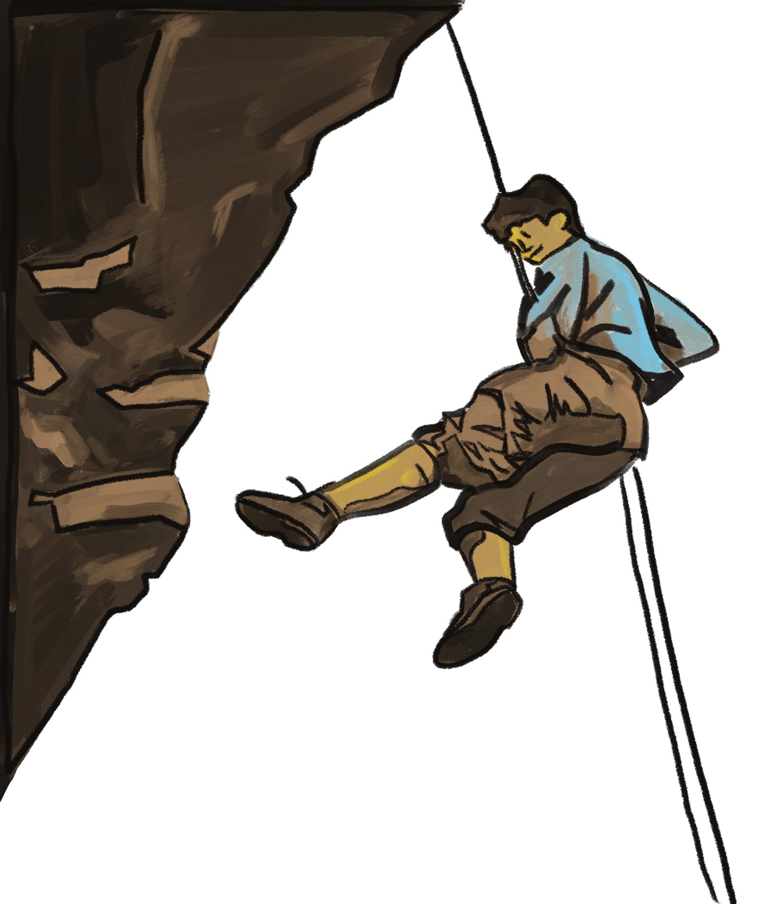

A Timeline of Women & Mountaineering
-
1799 Parminter Women
Jane Parminter, her sister, Elizabeth, her cousin Mary's ascent of Mont Buet in the Alps was the first record of women mountaineers. This event was recorded in two publications and represented a massive achievement. Mont Buet reaches a height of 3096 metres. The three Parminter ladies are now recognised as the first women to reach any alpine summit over 3000 metres. Mont Buet has been long been known affectionately as “Parminter Peak".
nationaltrust.org.uk
-
1848 Women's Suffrage
A women’s rights convention was held in Seneca Falls, New York. The Seneca Falls meeting was not the first in support of women’s rights, but suffragists later viewed it as the meeting that launched the suffrage movement.
nwhm.org
-
1871 The Matterhorn
In 1871 she learned that her rival Meta Brevoort, an American female mountaineer, was planning an expedition to climb the Matterhorn. Walker hastily assembled a group and on 22 August, while wearing a white print dress, she became the first woman to stand atop the Matterhorn, and with it gained world renown.
-
1900's New Tech
Various technical developments over the upcoming decades led to far greater possibilities.
Created in the 1910's, a piton is a steel wedge that is hammered into a crack in the rock to secure a rope for climbing.
They were used as the main method of protection in mountaineering until the 1970s when modern forms of climbing protection and the "clean climbing" ethic became popular.An oblong metal ring with one spring-hinged side that is used especially in mountain climbing as a connector and to hold a freely running rope.
The word carabiner actually originates from a German term that emerged at some point between the 1920s and the 1930s. That term is Karabinerhaken. The most literal translation of Karabinerhaken is "carabineer's hook." A carabineer was a type of soldier in France starting in the 1600's.Nylon was patented in 1935 and was first used in climbing rope in America in the early 1940s. The first nylon climbing rope made its way to Europe in 1949.
This was a key factor in rock climbing emerging as a sport and the benefits were instantly apparent. The nylon ropes were more elastic, aiding in fall protection
Lucy Walker
Bonnie Prudden
-
1940's Bonnie Prudden
Prudden was a pioneer of the Shawangunk Mountains in New Paltz, NY. She put up roughly 30 first ascents in the Shawangunk Ridge, including Bonnie’s Roof, Wrist and The Brat. After giving up climbing she went on to create the presidential fitness program.
Meghan Walsh
-
1972 Title IX
No person in the United States shall, on the basis of sex, be excluded from participation in, be denied the benefits of, or be subjected to discrimination under any education program or activity receiving Federal financial assistance.
-
1960's The Feminine Mystique
Betty Friedan’s book inspired thousands of women to find fulfillment beyond the role of housewife. Until its release, women spent 55 hours per week on domestic duties, and less than 10% of all doctors and engineers were women. The women who pursued climbing were on the fringe of society. They rejected cultural norms and pursued their own sense of purpose.
-
1980's Sport Climbing
A form of rock climbing that gained traction in the 80's. It relies on permanent anchors fixed to the rock for protection. This is in contrast to traditional climbing where climbers must place removable protection as they climb. Lynn Hill was one of the best, if not the best, sport climber during this period
-
1993 The Nose
The Nose is one of the original technical climbing routes up El Capitan. It was once considered impossible to climb. In 1993, together with her partner Brooke Sandahl, she became the first person, male or female, to free climb the route.[60] Hill's original climbing grade for the "Free Nose" was 5.13b.
Meghan Walsh
-
2000's Climbing Gyms
For those who don’t have easy access to an outdoor climbing area, indoor rock climbing gives them the next best thing, substituting hand and foot holds for the nooks and crannies found on the sides of an outdoor crag. The sport is now easier to enter for those that can't access technical gear.
-
2016 Ashima Shiraishi
A child prodigy, Ashima Shirashi began climbing in 2007. On her 15th birthday in 2016, she flashed the hardest route ever climbed by mankind: the V15 Horizon on Japan’s Mount Hiei. Time magazine called her one of the Most Influential Teens of 2015.